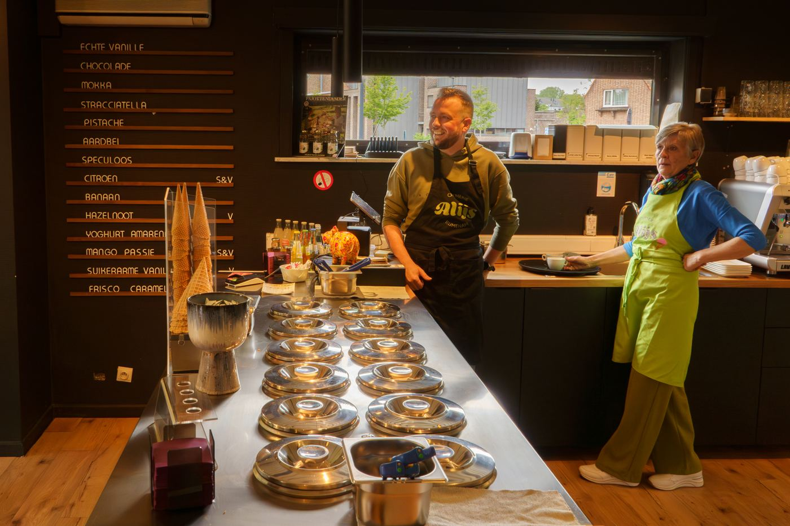

Van bij de boer
Onze melk halen we zelf op bij een boerderij om de hoek, vlak aan de Dijle. We pasteuriseren ze zelf, zodat er niets verloren gaat van de echte melksmaak.
Cremerie Alijs begon met een droom van Maarten: een plek waar ambacht, kwaliteit en gezelligheid samenkomen. In Rijmenam vonden we die plek.

Maarten droomde al lang van een eigen cremerie. Geen ketenwinkel, maar een plek waar je het ijs nog proeft zoals het hoort: vers, eerlijk en zonder poespas. Na een lange zoektocht vonden we in Rijmenam het juiste pand, en op 14 februari 2026 gingen de deuren open.
Maarten, Bram, onze ouders en een fijne groep studenten zorgen samen voor een huiselijke sfeer waar iedereen welkom is.
Pak een bolletje, blijf even hangen met een koffie, of neem een doosje mee naar huis. Bij Cremerie Alijs ben je altijd welkom.

Onze melk halen we zelf op bij een boerderij om de hoek, vlak aan de Dijle. We pasteuriseren ze zelf, zodat er niets verloren gaat van de echte melksmaak.
IJs is op z'n best vlak na het draaien. Daarom houden we zo weinig mogelijk voorraad, zodat je altijd vers, luchtig en heerlijk ijs krijgt.
Ons ijs zit in pozzetti, afgedekte kuipen die het op de juiste temperatuur houden. Bekijk de smaken van vandaag
Lange Dreef 9, Rijmenam. We zien je graag.